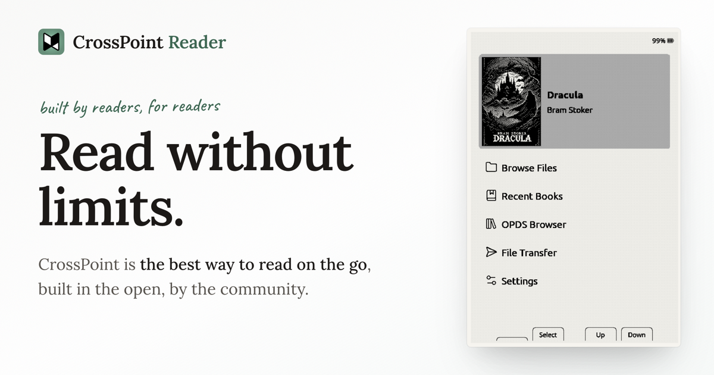
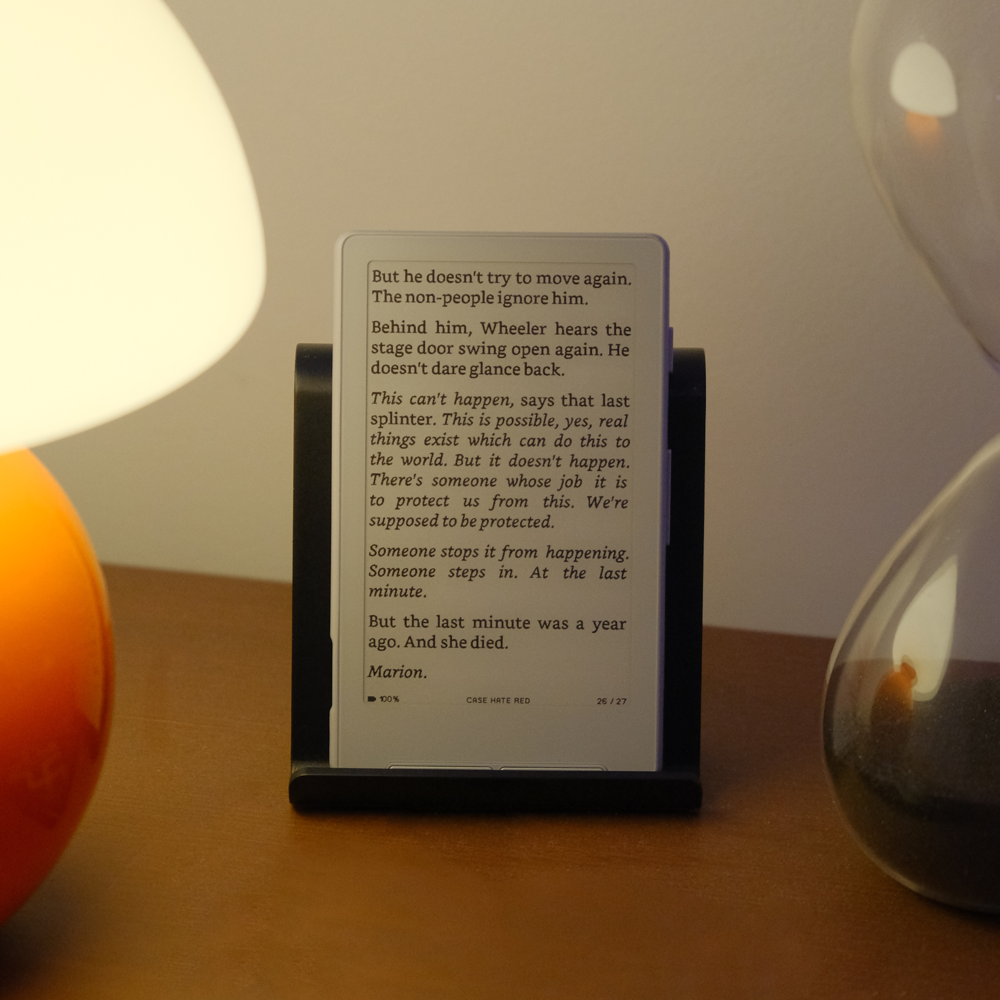

CrossPoint
Open-source reading firmware with EPUB support, custom fonts, and wireless book transfer.
- X3
- X4
- X4 Pro
- X4 Classic
Usage requirements may vary. Refer to the project documentation.
Discover community-built projects that expand what your XTEINK device can do.

Open-source reading firmware with EPUB support, custom fonts, and wireless book transfer.
Usage requirements may vary. Refer to the project documentation.

Community reading firmware with Chinese support, lightweight apps, and reading statistics.
Usage requirements may vary. Refer to the project documentation.
Project information will appear here after third-party submission and XTEINK review.
Usage requirements may vary. Refer to the project documentation.
Future projects will use the same fields and card structure without changing the list layout.
Usage requirements may vary. Refer to the project documentation.
These projects are independently developed and maintained by third-party communities. Refer to each project’s documentation for supported models and flashing requirements.